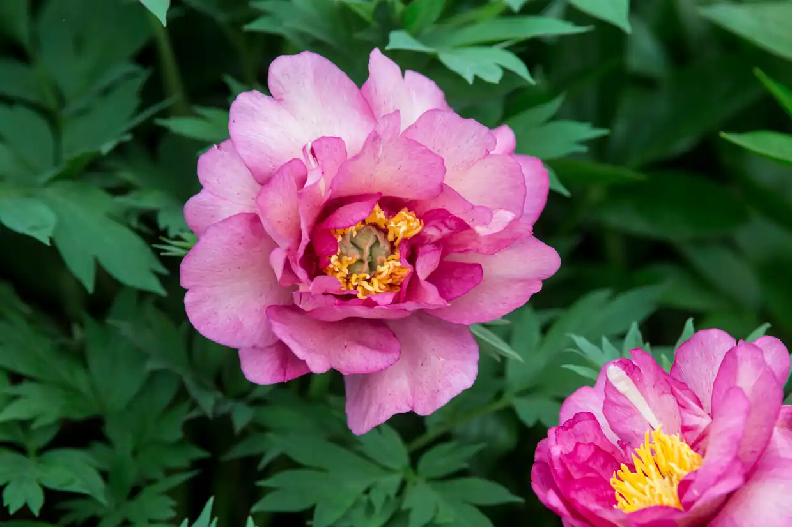

Most popular peony types
-

Peony ‘Coral Charm’ flowers in June, changing colour as it opens.
-
Peony ‘Duchess of Kent’ is a vigorous Japanese tree peony, eventually reaching a size of up to 1.2m.
-

Large, apricot and magenta two-tone blooms with a rich, spicy fragrance.
-
Peony ‘Lollipop’ is an intersection peony with unusual pink-speckled apricot blooms.